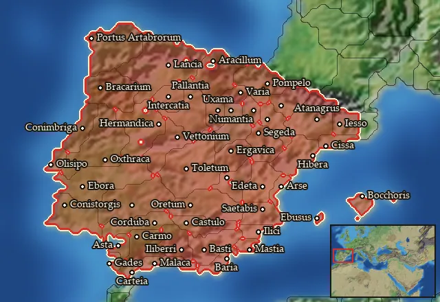

RIS wiki › RIS Light › mercenaries
Iberia
Main campaignRIS Light
← all mercenary pools · wiki index
Mercenary pool: 8 units for hire in 47 regions.

Mercenaries
| Unit | Cost (dn) | Experience | At start | Most in pool | Added per turn | Who can hire | |
|---|---|---|---|---|---|---|---|
| Mercenary Iberian Falarica Infantry | 3,667 | 0 | 1 | 2 | 0.094–0.187 | Any faction | |
| Mercenary Caetrati Infantry | 3,731 | 0 | 1 | 2 | 0.092–0.184 | Any faction | |
| Mercenary Scutarii Spearmen | 3,804 | 2 | 1 | 2 | 0.09–0.181 | Any faction | |
| Mercenary Iberian Skirmishers | 3,413 | 2 | 1 | 1 | 0.101–0.201 | Any faction | |
| Mercenary Balearic Slingers | 3,410 | 2 | 1 | 1 | 0.101–0.201 | Any faction | |
| Mercenary Cantabrian Cavalry | 2,793 | 0 | 1 | 2 | 0.123–0.246 | Any faction | |
| Mercenary Caetrati Cavalry | 3,401 | 1 | 1 | 2 | 0.101–0.202 | Any faction | |
| Mercenary Scutarii Cavalry | 3,692 | 2 | 1 | 1 | 0.093–0.186 | Any faction |
Regions (47)
Agadir · Arevacia · Arevacia Septentrionalis · Artabria · Asturia · Ay-Bushum · Baliares Maiores · Bastetania · Bastetania Maritima · Bastetania Occidentalis · Bellia · Beronia · Bracarensia · Calpe · Cantabria · Carpetania · Celticia · Cessetania · Conia · Contestania · Contestania Meridionalis · Edetania · Ergavicia · Hasta · Helmantike · Ilercavonia · Ilergetia · Lacetania · Lusitania · Lusonia · Malaka · Mastienia · Olcadia · Oretania · Oretania Meridionalis · Saguntia · Sedetania · Suessetania · Tagia · Turdetania · Turdetania Septentrionalis · Turdulia · Turdulorum Oppida · Vaccaea · Vaccaea Occidentalis · Vasconia · Vettonia